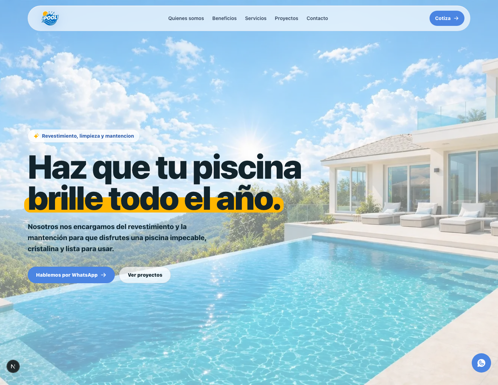
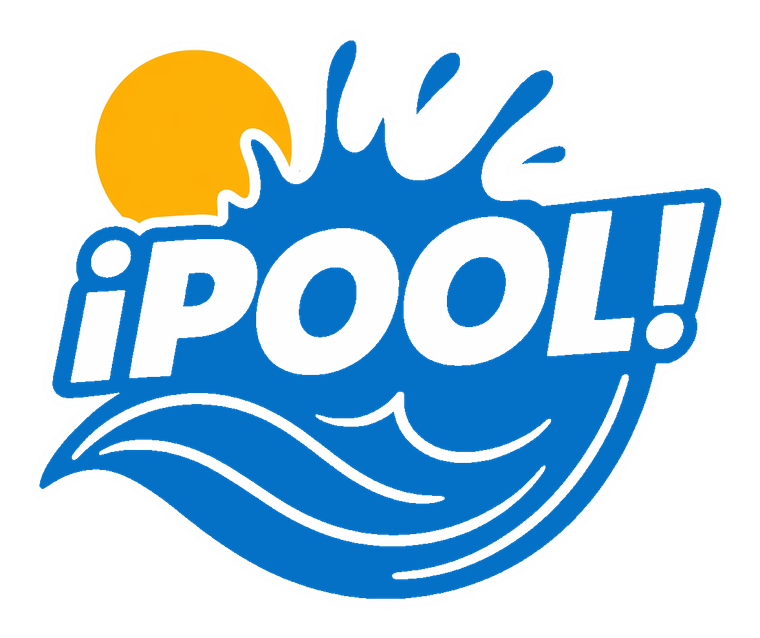
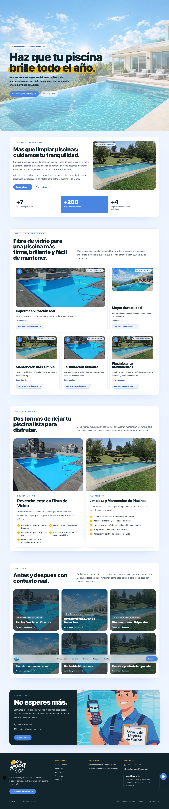
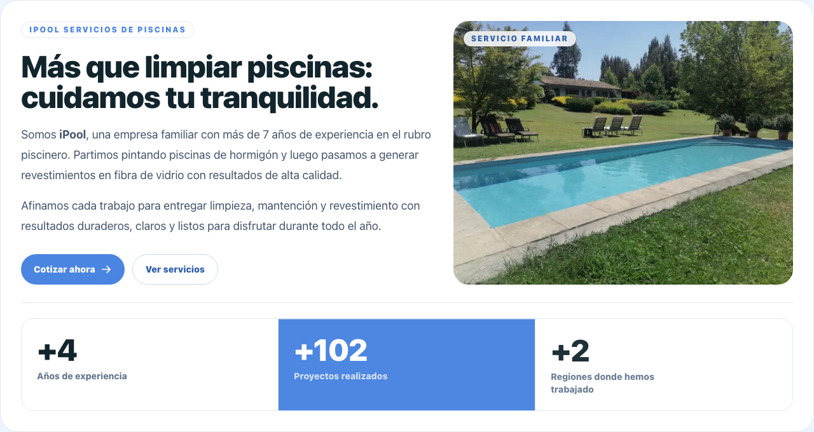
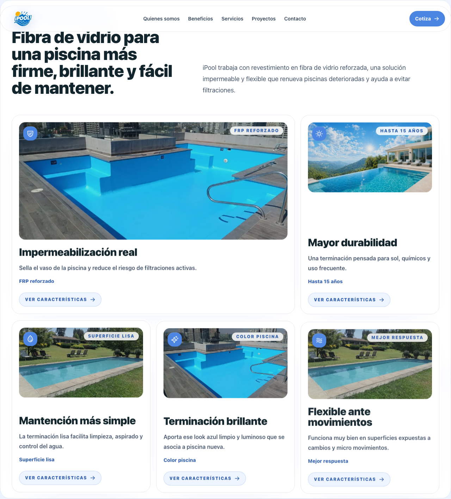
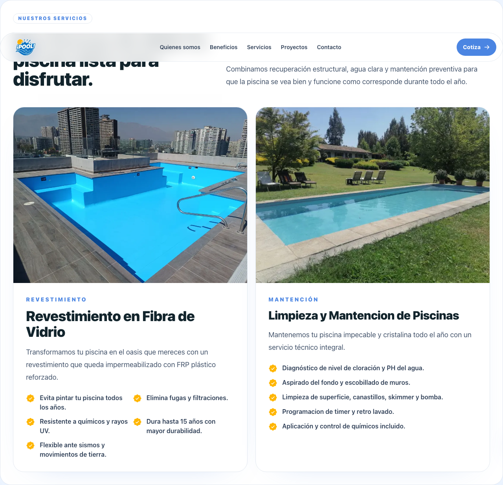
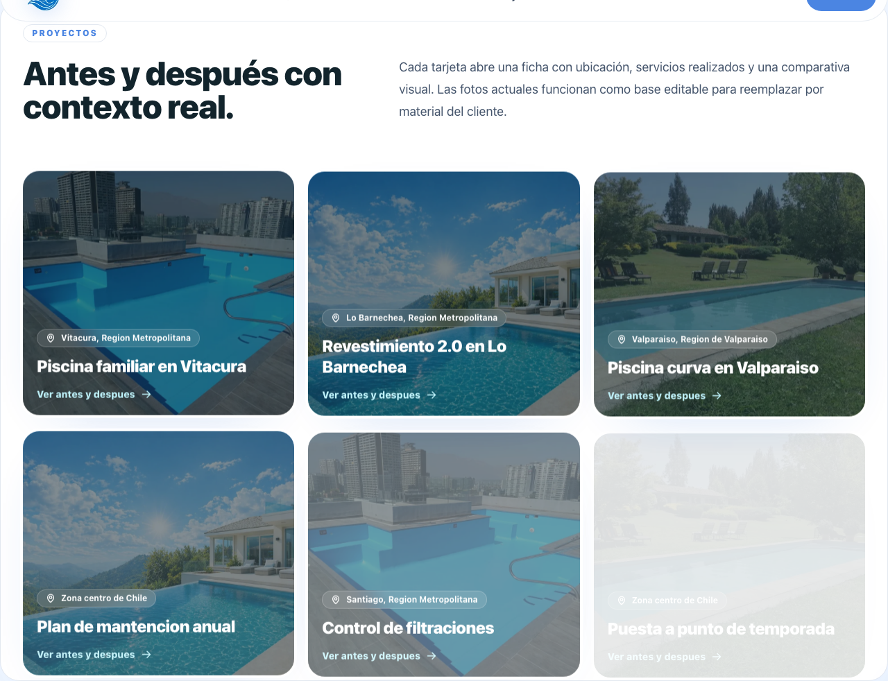
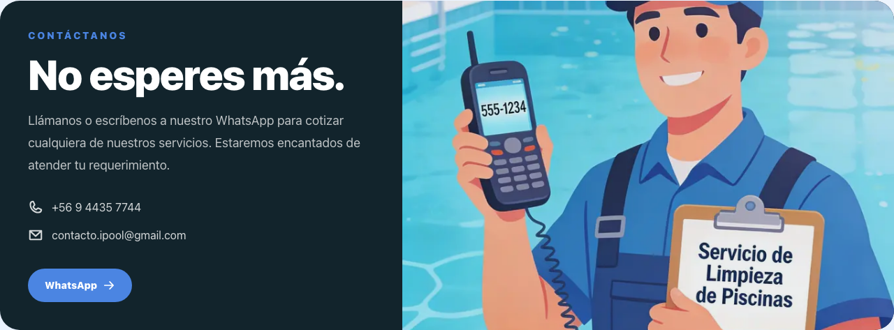
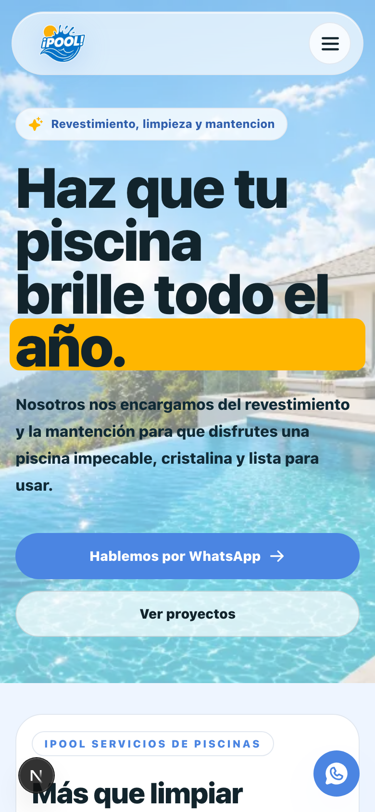
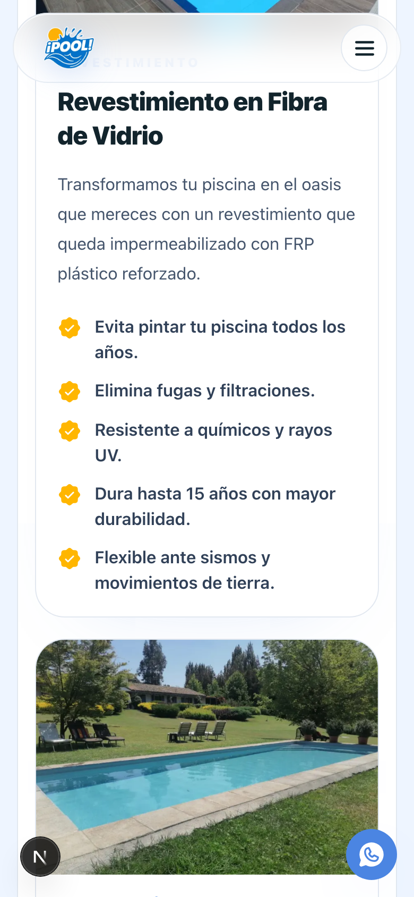

Una presentación más visual para mostrar al cliente cómo se resolvió la página, por qué se eligió este estilo y cómo cada bloque ayuda a generar confianza y cotizaciones.
La página guía al usuario desde una primera impresión visual hacia los servicios, beneficios, proyectos y contacto por WhatsApp.
La idea fue evitar una página cargada y construir una experiencia simple: ver, entender y contactar.
Los colores nacen del logo, por eso el diseño se siente coherente de principio a fin. El azul comunica agua limpia y confianza; el amarillo se reserva para acentos de brillo y atención.

La portada muestra de inmediato el rubro, el beneficio principal y las dos acciones clave: cotizar o ver proyectos.
Esta sección humaniza la marca y presenta trayectoria antes de vender el servicio.

El diseño transforma argumentos técnicos en beneficios fáciles de entender.

Los servicios se separan en bloques grandes para que el cliente identifique rápido qué necesita.

La galería aporta credibilidad y ayuda al cliente a imaginar el resultado en su propia piscina.

El cierre cambia a un fondo oscuro para marcar el momento de acción y dejar los datos de contacto visibles.

En móvil, el contenido se ordena en una sola columna, los botones son grandes y el menú se vuelve táctil. Esto es clave porque muchas cotizaciones llegan desde WhatsApp y navegación móvil.


La propuesta presenta a iPool con una estética conectada al logo y al mundo de las piscinas. Cada sección tiene una función concreta: atraer, explicar, demostrar confianza y facilitar el contacto.